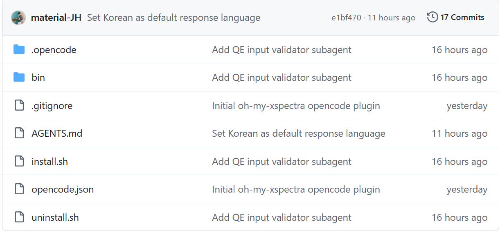

1. 설치: OpenCode 위에 QE 실습 레이어를 얹습니다
먼저 OpenCode를 설치한 뒤, Oh My QE 저장소를 받아 설치 스크립트를 실행합니다. 설치 후에는 OpenCode의 / command palette에서 /qe 계열 명령이 보입니다.
$ git clone https://github.com/material-JH/oh-my-qe.git $ ./oh-my-qe/install.sh # 필요하면 PATH 추가 $ export PATH="$HOME/.local/bin:$PATH" $ cd /scratch/$USER/xspectra-tutorial $ opencode

commands
~/.config/opencode/commands/qe*.md에 slash command를 설치합니다.
plugin hook
oh-my-qe.js가 QE 실행 안전 규칙과 랩 노트 기록을 처리합니다.
validator agent
qe-input-validator가 QE 입력의 BLOCKER/WARN 항목을 읽기 전용으로 검사합니다.
omq helper
~/.local/bin/omq가 check, submit, plot, lab, validate 작업을 수행합니다.

2. Slash command: 10개 top-level 명령 + /qe hub
OpenCode의 / autocomplete가 보여 주는 항목 수가 제한될 수 있으므로, 자주 쓰는 명령은 top-level로 두고 나머지는 /qe <subcommand> hub에 넣었습니다.

/qe를 입력하면 QE 실습 명령이 command palette에 나타납니다.Top-level slash commands
| 명령 | 역할 |
|---|---|
/qe | 덜 자주 쓰는 워크플로를 모아 둔 command hub |
/qe-help | 명령어 안내 출력 |
/qe-check [DIR] | QE 실행파일, Python, 스케줄러, project 쓰기 권한 확인 |
/qe-plan [DIR] | 현재 파일 기준으로 안전한 실행 계획 작성 |
/qe-submit <SCRIPT> [DIR] | .sbatch, .slurm, .pbs 스크립트 제출 |
/qe-status | Slurm/PBS 큐 상태 확인 |
/qe-debug [DIR] | 최근 출력과 scheduler log를 읽고 실패 원인 설명 |
/qe-plot [DIR] | 기존 plotting script 또는 2-column .dat 시각화 |
/qe-lab-init [DIR] | .oh-my-qe/lab/ 랩 노트 생성 |
/qe-lab-view [DIR] [QUERY] | 랩 노트 보기/검색 |
Hub subcommands
| Subcommand | 역할 |
|---|---|
resources [pseudo|structure|cif|all] | 검증된 pseudo/구조 DB 링크 |
files [DIR] | 입력, 출력, pseudo, scheduler, plot 파일 목록 |
env [DIR] | host, scheduler, MPI, QE path, Python, disk 요약 |
mode [expert|beginner] | 초보자/전문가 응답 모드 전환 |
expert <REQUEST> | 짧은 전문가 모드 답변 요청 |
explain-input <FILE> | QE 입력 파일 설명 |
validate-input <FILE|DIR> | QE 입력 정적 검사 |
defect-plan [DIR] | 결함 계산 계획 |
xspectra-plan [DIR] | XSpectra 계산 계획 |
lab-update [DIR] | 프로젝트 상태에서 랩 노트 synthesis 갱신 |


3. 기본 워크플로: 확인 → 계획 → 검증 → 제출 → 기록
/qe-check로 pw.x, xspectra.x, Python, queue command, env.sh, project 쓰기 권한을 확인합니다./qe-lab-init로 .oh-my-qe/lab/index.md, notes.md, log.md를 만듭니다. 원시 QE 입력/출력은 source of truth이고, 랩 노트는 유지되는 synthesis layer입니다./qe-plan 또는 /qe xspectra-plan으로 무거운 계산을 바로 실행하지 않는 계획을 만듭니다./qe validate-input 또는 validator agent로 BLOCKER/WARN을 확인합니다./qe-submit은 기존 scheduler script만 제출합니다. heavy QE 실행은 Slurm/PBS queue를 거칩니다./qe-status, /qe-debug, /qe-plot, /qe-lab-view로 상태·오류·그림·기록을 닫습니다.SLURM_JOB_ID, PBS_JOBID, PBS_JOB_ID)이 없으면 pw.x, xspectra.x 같은 QE executable을 로그인 노드에서 직접 실행하지 않습니다. cluster policy, queue, account, walltime이 불명확하면 값을 만들어 내지 말고 instructor/admin에게 확인합니다.

4. XSpectra 튜토리얼에서 쓰는 방식
Diamond C K-edge
처음에는 짧은 diamond 예제로 SCF → XSpectra → replot → core-hole SCF → core-hole XSpectra 흐름을 익힙니다. Oh My QE는 현재 파일을 읽고 어떤 입력과 scheduler script를 써야 하는지 초보자용 순서로 풀어 줍니다.
SrTiO3 O K-edge
흡수 원자를 별도 species(Oh)로 분리하고 xiabs, HCH/FCH pseudo, tot_charge, supercell, k mesh를 확인합니다. 논문 수준 해석 전에는 아래 convergence 기준으로 production setting을 재검토합니다.

/qe-plan C-K edge diamond 출력 예시.

JOB DONE과 생성된 spectrum 파일, 그리고 plot입니다.5. Manuscript convergence test: 빠른 실습값과 production 해석값을 분리합니다
Supplemental Material의 O K-edge HCH convergence test는 wavefunction cutoff, k-point mesh, Lanczos iteration을 독립적으로 바꾸며 t2g–eg peak spacing ΔE와 peak-height ratio I(t2g)/I(eg)를 추적했습니다. 결론은 단순합니다: cutoff와 Lanczos는 안정적이지만, k mesh는 실제 해석 품질을 좌우합니다.
ecutwfc
40/55/70 Ry에서 ΔE=5.86 eV, intensity ratio도 0.780 전후로 안정적입니다.
Lanczos
500/1000/2000 iteration에서 두 지표가 변하지 않아 production 값으로 충분합니다.
Unit-cell k mesh
2³는 부적절하고 4³도 line shape 차이가 남습니다. 6³ 이후 안정, production은 8³.
Supercell k mesh
2³ supercell은 under-sampled. 3³부터 주요 feature가 안정되고 4³는 5³ reference에 가깝습니다.
Table S6 요약: scalar feature convergence
| Parameter | Value | ΔE (eV) | I(t2g)/I(eg) | 판정 |
|---|---|---|---|---|
| Wavefunction cutoff | 40 Ry | 5.86 | 0.782 | stable |
| 55 Ry | 5.86 | 0.780 | baseline | |
| 70 Ry | 5.86 | 0.781 | stable | |
| Unit-cell k-grid | 2 × 2 × 2 | 5.71 | 0.599 | inadequate |
| 4 × 4 × 4 | 5.86 | 0.780 | visible line-shape difference | |
| 6 × 6 × 6 | 5.81 | 0.770 | mostly stable | |
| 8 × 8 × 8 | 5.81 | 0.765 | production | |
| 10 × 10 × 10 | 5.81 | 0.765 | stable | |
| 12 × 12 × 12 | 5.81 | 0.765 | reference | |
| Lanczos iterations | 500 | 5.86 | 0.780 | stable |
| 1000 | 5.86 | 0.780 | stable | |
| 2000 | 5.86 | 0.780 | production |
Table S7 요약: extended k-point line-shape difference
| System | Mesh | RMS vs reference | Max abs. vs reference | 읽는 법 |
|---|---|---|---|---|
| Unit cell, reference 12³ | 2³ | 0.2141 | 0.5020 | not usable |
| 4³ | 0.0652 | 0.1408 | training-only speed setting | |
| 6³ | 0.0261 | 0.0527 | acceptable trend | |
| 8³ | 0.0113 | 0.0301 | production choice | |
| 10³ | 0.0043 | 0.0132 | near reference | |
| Pristine 2×2×2 supercell, reference 5³ | 2³ | 0.0508 | 0.1460 | under-sampled |
| 3³ | 0.0195 | 0.0700 | main features stable | |
| 4³ | 0.0072 | 0.0286 | production choice | |
| δ = 0.125 vacancy supercell, reference 5³ | 2³ | 0.0359 | 0.1027 | under-sampled |
| 3³ | 0.0143 | 0.0334 | main features stable | |
| 4³ | 0.0040 | 0.0127 | production choice |
Method-sensitivity checks
Broadening
δ≈0.25 O K-edge에서 γ=0.8/1.2 eV broadening을 바꿔도 broad high-post-edge plateau가 생기지 않습니다.
DFT+U
Ti-only Dudarev U=2, 4 eV scan은 near-stoichiometric 기준과 high-δ vacancy line shape mismatch를 해결하지 못했습니다.
Empty states
Stoichiometric nbnd=30/45/60, vacancy nbnd=240/320/400 범위에서 manuscript metric window의 line shape는 안정적입니다.
6. 수업 운영 메모
처음 10분
/qe-check와 /qe-lab-init만 성공시키면 이후 오류 추적이 쉬워집니다. 학생별 환경 차이는 이 단계에서 드러납니다.
계산 제출 전
입력 변경 후에는 /qe validate-input 결과의 BLOCKER를 먼저 닫습니다. BLOCKER가 남은 제출은 instructor override 없이는 진행하지 않습니다.
결과 해석 전
실습용 빠른 mesh 결과는 “workflow 성공” 증거입니다. peak spacing, intensity ratio, vacancy fraction 같은 물리 결론은 convergence setting으로 재계산한 뒤 말합니다.